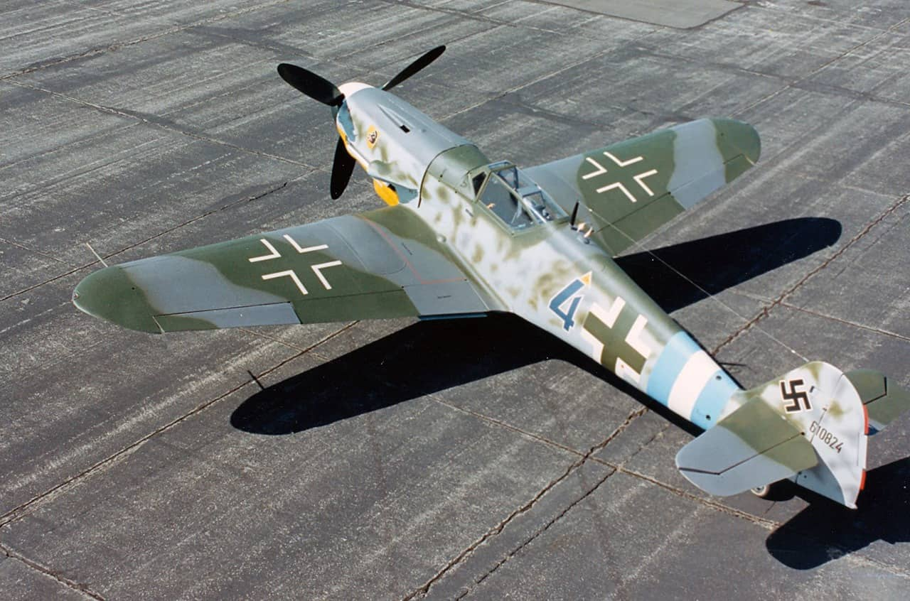

Top speed of 400 km/h (250 mph) at 6,000 m (20,000 ft), to be maintained for 20 minutes, while having a total flight duration of 90 minutes. The critical altitude of 6,000 metres was to be reached in no more than 17 minutes, and the fighter was to have an operational ceiling of 10,000 m (33,000 ft)
